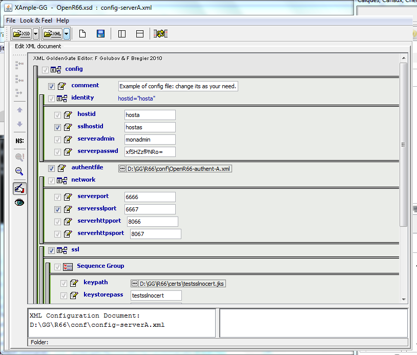
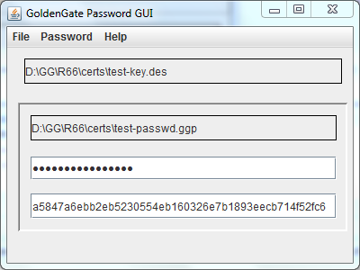

|
| ||||||||||||||||
|
|
Waarp R66-ConfigurationTo configure a Waarp R66 Server, you need to first create the XML files as needed (see the Xml Config files page): main config file, authent file, rules and limit config files. To help the administrator to generate correct files, XSD models are defined to be used with an extension of the project Xample (XML Gui Editor) from Felix Golubov.

Then, you create a database entry in the model you choose (currently supported is Oracle, PostGreSQL, MySQL and H2 Database). This database entry should be referenced in the XML config files. Below is presented the schema of the database that will be created.
You need to get all the necessary jar (see the depencies of the project) to allow you to launch the server. An example of shell script including all jar is presented in the src/main/example directory.
Then you launch the ServerInitDatabase.
Note that multiple Waarp R66 Servers may shared the exactly same database. Waarp R66 is compatible with such a model. Note however that Rules are strictly shared, which means that you will need to take care of the absolute path of EXEC commands such that they are valid on all Waarp R66 servers where it should be executed.
Cryptography For the administrator you need a KeyStore containing a RSA key for SSL support in HTTPS and a specific DES Key for the crypted password support. DES crypted support and generation are available through the GoldenGate Password GUI project.

You need another KeyStore for the SSL support in the Waarp R66 protocol, but only if you want to use this SSL channel. If you don't want that OpenR66 uses SSL between two hosts, then you only need one KeyStore for the HTTPS support.
In the source, you will find in the certs directory 2 such keystore named admin66.store and openr66.store. You can named the files as you wanted (using the standard "jks" extension for instance). To generate those files, you can also ue the keytool command from the jdk, or using the cool free tool KeyTool IUI (last known version in 2.4.1).
For instance: keytool -genkey -alias myalias -keyalg RSA -validity xxx -keystore mystore.store
Below you will find the full detail on how to create those KeyStore and TrustedKeyStore according to your needs:
To generate the stores for Waarp R66 for instance, you need to create 2 JKS keyStore. To generate those files, you can use the "keytool" command from the JDK or using the free tool KeyTool IUI (last known version in 2.4.1). Below we show how to use the Keytool IUI.
Then you have to fill the ports to use (serverssl port for Waarp R66 channels, serverhttpsport for the administrator) and to set up the good path to every components (don't forget the path to the html admin files).
Now you can launch the Waarp R66 Server. |